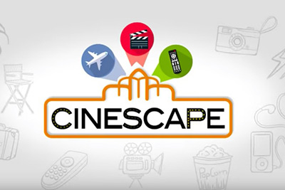

Cinescape, el magacín de cine peruano, sigue en pantalla
El querido programa de Bruno Pinasco, emitido por América TV, mantiene su relevancia en 2025, entregando reviews, estrenos y contenido cinematográfico internacional y local.